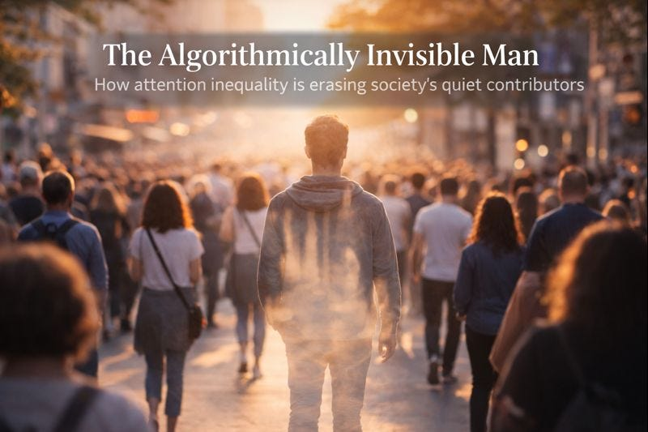

Many people are talking about the symptoms. Very few are naming the root cause.

Dear Reader,
I’m writing this to bring your attention to a serious social problem—one that’s difficult to describe precisely, but whose effects are everywhere once you start looking.
Many people are talking about the symptoms. Very few are naming the root cause.
The problem is this: attention is no longer distributed equitably in society.
Some people receive enormous amounts of it. Others receive almost none. Not because they are bad people—but because they are not favored by algorithms.
This may not seem like a big deal at first glance. But, it is.
Attention is a fundamental human necessity. When a person is consistently unseen and unheard, something in them begins to shut down. Asking for help becomes harder. Hope becomes irrational. Eventually, even effort starts to feel pointless.
To make this concrete, I want to tell you about someone I know. I’ll call him George.
George is a real person, and he represents what’s happening to more people than we’d like to admit.
George isn’t perfect, but he’s been a model citizen by any reasonable standard. He’s a millennial man who worked hard, honored commitments, showed up for friends, paid his taxes, and quietly contributed to society without expecting recognition. He’s intelligent, capable, and dependable.
He’s also the kind of person society depends on without ever really noticing.
A few months ago, George attempted to take his own life. He survived, but he spent over a week in the hospital. What worries me isn’t the attempt itself, but the fact that nothing about his circumstances has meaningfully changed since.
This wasn’t impulsive, and it wasn’t attention-seeking. It came after more than a year of trying—earnestly—to reconnect with other people.
I’ve known George for many many years, and after what happened, I spent a great deal of time talking with him, trying to understand the chain of events that led there.
During COVID, George’s friends moved away. Later, his company collapsed. His fiancée left. His parents had already passed away. He does have a sister, but she lives far away, is significantly older, and has several young children of her own. She isn’t meaningfully engaged in his day-to-day life and has no practical ability to help him.
He was left on his own due to events largely outside of his control.
His business was in the housing market, and he owned a home of his own—something that, until recently, was widely considered responsible financial planning. As conditions shifted, that situation turned against him. What had once looked like stability became an anchor.
He found new work eventually. He tried rebuilding a social life from scratch. He reached out to people—not to complain, but to check in on them, assuming others were struggling too.
Most didn’t respond. Others, when they found out what happened, offered prayers or kind words, but never followed up. Dating apps rendered him effectively invisible. His social media posts went nowhere. People did not invite him to holidays or gatherings.
So he tried hosting his own gatherings.
No one came—not out of malice or rejection, but because people were already with their own families. It simply didn’t occur to anyone to invite someone who didn’t have their own.
I don’t believe this is because there’s something wrong with George. People are busy. Everyone’s attention is fragmented. Ten thousand notifications compete for priority every day.
George simply isn’t anyone’s priority.
And that’s understandable—individually.
But what happens collectively?
What makes this especially painful is that George, when he was able, was extraordinarily effective with the resources he had.
I only know about these things because I was close enough to him that he trusted me to help carry some of them out. George genuinely believed in not letting his left hand know what his right hand was doing. How many other acts of goodwill were never seen by anyone else?
During COVID, he quietly directed resources toward families in countries where local economies had collapsed. In some places, people could no longer afford even basic food staples like rice. Newborn infants were going hungry. These were people he had come to know over years prior.
This wasn’t symbolic charity. It wasn’t about visibility. It was intervention at a moment where timing mattered.
Early childhood nutrition is not something you can “catch up” on later. Miss those developmental windows, and the damage is permanent—cognitive capacity, physical health, lifetime earnings, long-term stability. Without help at that exact moment, those children would not do as well in life.
George understood this. He applied resources where they would compound over decades, not where they would generate praise.
He did similar things elsewhere.
At one point, he bought computers for two young men with clear potential who wanted to “learn to code” but couldn’t afford the tools. Both later secured good jobs, earned stable incomes, and started families.
He helped a young man in the Philippines attend college—someone who went on to buy a house and build a stable life that would have otherwise been out of reach.
In another case, a man George knew in Thailand died of brain cancer, leaving behind a wife and two young boys living in a shanty town. George helped them buy a house. His money went much further there than where he was working.
That single act changed everything: physical safety, health, education, psychological stability. Those children’s life trajectories were permanently altered. This is the kind of harm that, once prevented, never shows up in statistics—but once missed, can never be undone.
None of this was algorithmically visible. None of it generated status. But its impact was real, durable, and multiplicative.
Entire life paths were changed because George acted when systems failed.
If it were within my power—if I had access to capital at that scale—I would give George a substantial grant. Not as charity, but as an investment.
I know exactly what he would do with it, because I’ve seen how he operates.
He would not chase visibility. He would not build a brand or spend it on luxury. He would spend his time getting to know people, understanding their circumstances, and identifying moments where a small, well-timed intervention permanently changes the course of a life.
This is something individuals like George can do that governments and large NGOs often cannot. Institutions operate through rules, categories, and eligibility thresholds. They are optimized for scale, not judgment. Individuals operate through relationships. They can see nuance. They can recognize when timing matters more than volume.
That kind of judgment is not bureaucratic. It cannot be automated. It only exists at the human level.
George has repeatedly demonstrated that kind of discernment. With relatively modest resources, he produced outcomes that compounded over decades—families stabilized, careers launched, children protected during irreplaceable developmental windows.
That capacity still exists. What’s missing isn’t ability or intent. It’s support.
Instead of being enabled to do this work, George is now fighting simply to remain solvent. The same system that failed to notice his contributions is now indifferent to his collapse.
George is now close to losing everything.
He was laid off again, and is currently unemployed. Unemployment insurance is capped far below what he used to earn and nowhere near what his mortgage requires. He has savings and assets, which disqualify him from most forms of assistance—but those assets are largely tied up in an underwater home he cannot sell without devastating loss.
The system punishes him for having been successful.
Modern support systems are designed for legibility and crisis, not for quiet competence in decline. George doesn’t fit the categories. He’s not addicted or visibly dysfunctional, he’s housed (for now), he has assets that are bleeding him dry, and he was capable and productive.
Someone who never earned much, never bought property, never built equity may actually have more access to help because they are legibly poor in ways the system recognizes.
But someone who worked hard, followed the rules, got overleveraged doing what society said was “responsible,” and is now quietly drowning? There is no form for that. No program. No early intervention.
The safety net catches people after they fall. We have very little infrastructure for preventing the slow-motion collapse of people who have been holding things together.
Where is the surgical intervention in his life?
George has little left. He is unlikely to be able to dig himself out alone. Homelessness is no longer an abstract possibility—it is a plausible outcome.
After enough time trying, it became clear that he no longer saw a realistic path forward. While I don’t agree with every part of that conclusion, his analysis is not unreasonable given the constraints he faces.
More importantly, he no longer sees the point in continuing to contribute to a society that seems unable to see him.
I don’t think this assessment is irrational.
George’s story is not unique. It’s simply legible.
Across the country, there are millions of Americans who are not in crisis in ways the system recognizes, but are quietly slipping out of view. They are gainfully employed until suddenly they aren’t. They are housed until they’re barely holding on. They have savings or assets that disqualify them from help, but not enough liquidity to survive a prolonged shock.
They are not dramatic enough to trigger alarms. They are not broken enough to qualify for assistance. And they are often too conscientious—or too ashamed—to demand attention.
What they share is not failure of character, but failure of visibility.
In a society where attention is increasingly mediated by algorithms, responsiveness becomes a proxy for worth. Those who are already visible become more so. Those who are quiet, private, or unlucky at the wrong moment fade further into the background.
By the time anyone notices, the collapse is already well underway.
This is what we’re missing—not sudden catastrophe, but slow disappearance.
Twenty years ago, attention wasn’t mediated this way. It wasn’t filtered, ranked, optimized, and sold. Today, vast amounts of attention—and money—are funneled toward what algorithms amplify, regardless of actual contribution.
Meanwhile, people like George quietly disappear.
This matters because men like George are not peripheral. They are often the net contributors—the ones who keep systems running, pay more than they take, and absorb shocks without complaint.
If enough of them opt out—emotionally, socially, or literally—society will not hold together.
I’m doing what I can to support George, but I’m only one person. I can’t give him a family. I can’t rebuild his social world alone. And there are many more like him.
What troubles me most is how rarely we ask ourselves a simple question:
Who am I no longer hearing from—and why?
Modern society has become profoundly strange. Enormous resources are poured into capturing attention, while the people who quietly upheld the world for decades are left to vanish without notice.
George never built a brand around what he did. He didn’t advertise his generosity. He didn’t extract status from it.
Now he’s too ashamed to ask for anything, and people don’t fully understand how much trouble he’s in—despite knowing what happened.
I don’t know how to end this neatly. I only know that where we’re headed is not good.
So I’ll end with this:
Be mindful of your attention. Give it deliberately. Give it to people with character. Give it to those who hold the world up quietly.
Because when the people holding up the world can no longer bear the weight, we all will feel it.
Postscript
This isn’t a call for heroics, guilt, or grand social programs.
It’s a reminder that attention is something we allocate every day, often without thinking. A message returned. A check-in reciprocated. A willingness to ask not just “are you okay?” but “what can I do to help?” A thanksgiving meal shared.
As one ancient line puts it: if someone is told to go in peace, to keep warm and well fed, but nothing is done about their physical needs—what good is that?
Most situations like this don’t require one person to do everything. They could be meaningfully changed if many people did a little—without overburdening anyone.
If you’re reading this, there is almost certainly someone in your life who has gone quiet—not because they have nothing to say, but because they’ve learned that speaking no longer changes anything.
Sometimes the most meaningful intervention isn’t dramatic. It’s simply noticing who is still carrying weight, and helping them carry it before they disappear.